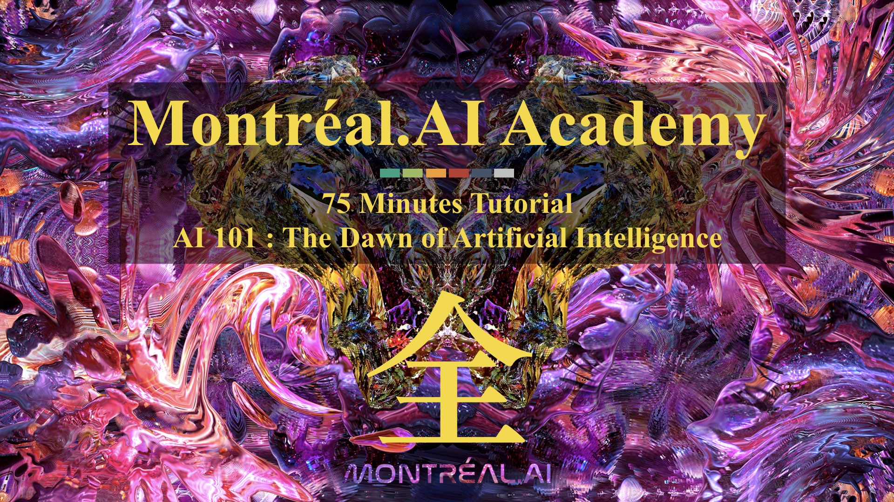

Montréal.AI Academy : AI 101
AI 101 : The Dawn of Artificial Intelligence

## The First Comprehensive Overview of All (全) AI for the General Public
AI 101 : A Well-Crafted Actionable 75 Minutes Tutorial
You are qualified for a career in machine learning!
POWERFUL & USEFUL. This actionable tutorial is designed to entrust everybody with the mindset, the skills and the tools to see artificial intelligence from an empowering new vantage point by :
— Exalting state of the art discoveries and science ;
— Curating the best open-source codes & implementations ; and
— Embodying the impetus that drives today’s artificial intelligence.
> “In life, you need forcing functions. You never know what you’re capable of until you have no choice but go and do it. Excessive comfort leads to unrealized potential.“ — François Chollet
### #AI4Artists : Unveilling a World of Hidden Secrets
Pioneering Legendary Creations
Designed for artists, #AI4Artists is created to inspire artists who, with AI, will shape the 21st Century.
> “The Artists Creating with AI Won’t Follow Trends; THEY WILL SET THEM.“ — Vincent Boucher, B. Sc. Theoretical Physics, M. A. Government Policy Analysis and M. Sc. Aerospace Engineering
Montréal.AI is the largest artificial intelligence community in Canada. Join us and learn at https://www.facebook.com/groups/MontrealAI/ !
## The First World-Class Overview of AI for the General Public
Curated Open-Source Codes, Implementations and Science

> “The best way to predict the future is to invent it.“ — Alan Kay
### 0. Getting Started
Today’s artificial intelligence is powerful, useful and accessible to all.
Tinker with Neural Networks : Neural Network Playground — TensorFlow
On a Local Machine
Install Anaconda and Launch ‘Anaconda Navigator’
Update Jupyterlab and Launch the Application Under Notebook, Click on ‘Python 3’
- JupyterLab is Ready for Users — Project Jupyter
In the Cloud
- Colab: An easy way to learn and use TensorFlow — TensorFlow
- Access free GPU compute via Colab — TensorFlow
- TensorFlow Blog — TensorFlow
In the Browser
- TensorFlow dev summit Official TensorFlow.js Launch
- Introducing TensorFlow.js: Machine Learning in Javascript — Josh Gordon, Sara Robinson
- TensorFlow.js — TensorFlow
Preliminary Readings
- Deep Learning — Yann LeCun, Yoshua Bengio, Geoffrey Hinton
- The WIRED Guide to artificial intelligence — WIRED
- Learn X in Y minutes (Where X=python3) — Louie Dinh
- The Matrix Calculus You Need For Deep Learning — Terence Parr, Jeremy Howard
- Introduction to the math of backprop — Deb Panigrahi
- “A birds-eye view of optimization algorithms” — Fabian Pedregosa
- Competitive Programmer’s Handbook — Antti Laaksonen
- A Neural Network in 11 lines of Python — iamtrask
- Machine Learning From Scratch — Erik Linder-Norén
- A Beginner’s Guide to the Mathematics of Neural Networks — A.C.C. Coolen

### 1. Deep Learning
> “DL is essentially a new style of programming–”differentiable programming”–and the field is trying to work out the reusable constructs in this style. We have some: convolution, pooling, LSTM, GAN, VAE, memory units, routing units, etc.“ — Thomas G. Dietterich
#### 1.1 Neural Networks
> “Neural networks” are a sad misnomer. They’re neither neural nor even networks. They’re chains of differentiable, parameterized geometric functions, trained with gradient descent (with gradients obtained via the chain rule). A small set of highschool-level ideas put together.“ — François Chollet
- AI Playbook — Andreessen Horowitz
- Clear Explanations of Machine Learning — Distill
- Deep Learning Book — Ian Goodfellow, Yoshua Bengio, Aaron Courville
- Neural Networks and Deep Learning — Michael Nielsen
- Deep Learning — Vincent Vanhoucke | Google
- A Complete Implementation of a Toy Neural Network — Stanford CS class CS231n
- Neural networks: training with backpropagation — Jeremy Jordan
- Effective TensorFlow for Non-Experts — Google Developers
- Avito Demand Prediction Challenge : Kaggle winner explains how to combine categorical, numerical, image and text features into a single NN that gets you into top 10 without stacking — Little Boat
- Practical Deep Learning For Coders — Jeremy Howard, Rachel Thomas | Fast.AI
> “I feel like a significant percentage of Deep Learning breakthroughs ask the question “how can I reuse weights in multiple places?”
– Recurrent (LSTM) layers reuse for multiple timesteps
– Convolutional layers reuse in multiple locations.
– Capsules reuse across orientation.“ — Trask
#### 1.2 Recurrent Neural Networks
- Understanding LSTM Networks — Christopher Olah
- Attention and Augmented RNN — Olah & Carter, 2016
- Computer, respond to this email — Post by Greg Corrado
- Massive Exploration of Neural Machine Translation Architectures arXiv | Docs | Code — Denny Britz, Anna Goldie, Minh-Thang Luong, Quoc Le
- A TensorFlow implementation of : “Hybrid computing using a neural network with dynamic external memory” GitHub — Alex Graves, Greg Wayne, Malcolm Reynolds, Tim Harley, Ivo Danihelka, Agnieszka Grabska-Barwińska, Sergio Gómez Colmenarejo, Edward Grefenstette, Tiago Ramalho, John Agapiou, Adrià Puigdomènech Badia, Karl Moritz Hermann, Yori Zwols, Georg Ostrovski, Adam Cain, Helen King, Christopher Summerfield, Phil Blunsom, Koray Kavukcuoglu & Demis Hassabis
#### 1.3 Convolution Neural Network
> “I admire the elegance of your method of computation; it must be nice to ride through these fields upon the horse of true mathematics while the like of us have to make our way laboriously on foot.“ — A. Einstein
- CNN Is All You Need — Qiming Chen, Ren Wu
- Feature Visualization — Chris Olah, Alexander Mordvintsev, Ludwig Schubert
- Understanding Neural Networks Through Deep Visualization — Jason Yosinski, Jeff Clune, Anh Nguyen, Thomas Fuchs, and Hod Lipson
- The Building Blocks of Interpretability — Chris Olah, Arvind Satyanarayan, Ian Johnson, Shan Carter, Ludwig Schubert, Katherine Ye, Alexander Mordvintsev
- Detectron : State-of-the-art Object Detection — Ross Girshick and Ilija Radosavovic and Georgia Gkioxari and Piotr Doll\’{a}r and Kaiming He
- YOLOv3: An Incremental Improvement | WebSite | YouTube — Joseph Redmon, Ali Farhadi
- Machine Learning for Artists | This is how convolution works — Machine Learning for Artists
- Deep Painterly Harmonization | Notebook — Sylvain Gugger
- How Convolutional Neural Networks Work — Brandon Rohrer
#### 1.4 Capsules
- Dynamic Routing Between Capsules — Sara Sabour, Nicholas Frosst, Geoffrey E Hinton
- Capsule Networks (CapsNets) – Tutorial — Aurélien Géron
- Capsules for Object Segmentation — Rodney LaLonde, Ulas Bagci
- Brain Tumor Type Classification via Capsule Networks — Parnian Afshar, Arash Mohammadi, Konstantinos N. Plataniotis
- A Tensorflow implementation of CapsNet — Huadong Liao
### 2. Autonomous Agents
> “No superintelligent AI is going to bother with a task that is harder than hacking its reward function.“ — The Lebowski theorem
#### 2.1 Evolution Strategies
- A Visual Guide to Evolution Strategies — David Ha
- Evolution Strategies as a Scalable Alternative to Reinforcement Learning — OpenAI
- The Surprising Creativity of Digital Evolution: A Collection of Anecdotes from the Evolutionary Computation and Artificial Life Research Communities — Joel Lehman, Jeff Clune, Dusan Misevic, Christoph Adami, Lee Altenberg, Julie Beaulieu, Peter J. Bentley, Samuel Bernard, Guillaume Beslon, David M. Bryson, Patryk Chrabaszcz, Nick Cheney, Antoine Cully, Stephane Doncieux, Fred C. Dyer, Kai Olav Ellefsen, Robert Feldt, Stephan Fischer, Stephanie Forrest, Antoine Frénoy, Christian Gagné, Leni Le Goff, Laura M. Grabowski, Babak Hodjat, Frank Hutter, Laurent Keller, Carole Knibbe, Peter Krcah, Richard E. Lenski, Hod Lipson, Robert MacCurdy, Carlos Maestre, Risto Miikkulainen, Sara Mitri, David E. Moriarty, Jean-Baptiste Mouret, Anh Nguyen, Charles Ofria, Marc Parizeau, David Parsons, Robert T. Pennock, William F. Punch, Thomas S. Ray, Marc Schoenauer, Eric Shulte, Karl Sims, Kenneth O. Stanley, François Taddei, Danesh Tarapore, et al. (4 additional authors not shown)
- Evolved Policy Gradients — Rein Houthooft, Richard Y. Chen, Phillip Isola, Bradly C. Stadie, Filip Wolski, Jonathan Ho, Pieter Abbeel
- Using Evolutionary AutoML to Discover Neural Network Architectures — Google AI
#### 2.2 Deep Reinforcement Learning
- Reinforcement Learning: An Introduction — Andrew Barto and Richard S. Sutton
- Intuitive RL: Intro to Advantage-Actor-Critic (A2C) — Rudy Gilman
- Monte Carlo Tree Search – beginners guide — Kamil Czarnogórski
- DQN Adventure: from Zero to State of the Art — higgsfield
- Learning to Act by Predicting the Future — Alexey Dosovitskiy, Vladlen Koltun
- OpenAI Baselines : A2C | ACER | ACKTR | DDPG | DQN | GAIL | HER | PPO2 | TRPO — OpenAI
- TRPO-GAE Blog | arXiv | arXiv — OpenAI
- A3C arXiv | Medium | Code — OpenAI
- TensorFlow Agents — TensorFlow
- Hierarchical Actor-Critic — Andrew Levy, Robert Platt, Kate Saenko
- Depth-Limited Solving for Imperfect-Information Games — Noam Brown, Tuomas Sandholm, Brandon Amos
- Optimizing Expectations: From Deep Reinforcement Learning to Stochastic Computation Graphs — John Schulman
- Neural Episodic Control — Alexander Pritzel, Benigno Uria, Sriram Srinivasan, Adrià Puigdomènech, Oriol Vinyals, Demis Hassabis, Daan Wierstra, Charles Blundell
- RLlib: Abstractions for Distributed Reinforcement Learning — Eric Liang, Richard Liaw, Philipp Moritz, Robert Nishihara, Roy Fox, Ken Goldberg, Joseph E. Gonzalez, Michael I. Jordan, Ion Stoica
- TreeQN and ATreeC: Differentiable Tree-Structured Models for Deep Reinforcement Learning — Gregory Farquhar, Tim Rocktäschel, Maximilian Igl, Shimon Whiteson
- Learning to Search with MCTSnets — Arthur Guez, Théophane Weber, Ioannis Antonoglou, Karen Simonyan, Oriol Vinyals, Daan Wierstra, Rémi Munos, David Silver
- Convergence of Value Aggregation for Imitation Learning — Ching-An Cheng, Byron Boots
- Dopamine : DQN | C51 | Rainbow | Implicit Quantile Network — Marc G. Bellemare, Pablo Samuel Castro, Carles Gelada, Saurabh Kumar, Subhodeep Moitra
- Deep Reinforcement Learning from Human Preferences arXiv | Blog | Code — OpenAI
- Introduction to Learning to Trade with Reinforcement Learning — Denny Britz
- Deep RL Bootcamp — Pieter Abbeel, Yan (Rocky) Duan, Xi (Peter) Chen, Andrej Karpathy
#### 2.3 Self Play

- Deep Learning: AlphaGo Zero Explained In One Picture — L.V.
- How to build your own AlphaZero AI using Python and Keras — David Foster
- An open-source implementation of the AlphaGoZero algorithm — TensorFlow
> “Self-Play is Automated Knowledge Creation.“ — Carlos E. Perez
#### 2.4 Multi-Agent Populations
- Machine Theory of Mind — Rabinowitz et al.
- A Unified Game-Theoretic Approach to Multiagent Reinforcement Learning — Lanctot et al.
- Continuous Adaptation via Meta-Learning in Nonstationary and Competitive Environments — Al-Shedivat et al.
- Autonomous Agents Modelling Other Agents: A Comprehensive Survey and Open Problems — Stefano V. Albrecht, Peter Stone
- Learning with Opponent-Learning Awareness Paper | Blog — OpenAI
- Multi-Agent Actor-Critic for Mixed Cooperative-Competitive Environments Paper | Blog | Code — OpenAI
#### 2.5 Deep Meta-Learning
- Learning to Learn Paper | Code — Google DeepMind, University of Oxford, Canadian Institute for Advanced Research
- Model-Agnostic Meta-Learning for Fast Adaptation of Deep Networks — Chelsea Finn, Pieter Abbeel, Sergey Levine
- Efficient Neural Architecture Search via Parameter Sharing Paper | Code — Hieu Pham, Melody Y. Guan, Barret Zoph, Quoc V. Le, Jeff Dean
- Meta-Learning Shared Hierarchies Paper | Blog | Code — OpenAI
- Reptile: A Scalable Meta-Learning Algorithm — Alex Nichol, John Schulman
- NIPS2017 Meta Learning Symposium videos — NIPS 2017
#### 2.6 Generative Adversarial Network
- Generative Models — OpenAI
- Generative Adversarial Networks (GANs) in 50 lines of code (PyTorch) — Dev Nag
- TensorFlow-GAN (TFGAN) — TensorFlow
- Bayesian GAN arXiv | GitHub — Yunus Saatchi, Andrew Gordon Wilson
- A collection of GANs TensorFlow | PyTorch
> “What I cannot create, I do not understand.“ — Richard Feynman
#### 2.7 World Models
- World Models — David Ha, Jürgen Schmidhuber
- Imagination-Augmented Agents for Deep Reinforcement Learning — Théophane Weber, Sébastien Racanière, David P. Reichert, Lars Buesing, Arthur Guez, Danilo Jimenez Rezende, Adria Puigdomènech Badia, Oriol Vinyals, Nicolas Heess, Yujia Li, Razvan Pascanu, Peter Battaglia, Demis Hassabis, David Silver, Daan Wierstra
### 3. Environments
#### 3.1 OpenAI Gym
- OpenAI Gym WebSite | Blog | GitHub | White Paper — OpenAI
#### 3.2 Unity ML-Agents
- Unity ML-Agents WebSite | GitHub | Documentation | Challenge I — Unity Technologies
#### 3.3 DeepMind Control Suite
- DeepMind Control Suite Paper | GitHub | Video — DeepMind
### 4. General Readings, Ressources and Tools
- GitXiv | arXiv + CODE — Collaborative Open Computer Science
- ASILOMAR AI PRINCIPLES — The 2017 Asilomar conference
- Strategic Implications of Openness in AI Development — Nick Bostrom
- The Malicious Use of Artificial Intelligence: Forecasting, Prevention, and Mitigation — Miles Brundage, Shahar Avin, Jack Clark, Helen Toner, Peter Eckersley, Ben Garfinkel, Allan Dafoe, Paul Scharre, Thomas Zeitzoff, Bobby Filar, Hyrum Anderson, Heather Roff, Gregory C. Allen, Jacob Steinhardt, Carrick Flynn, Seán Ó hÉigeartaigh, Simon Beard, Haydn Belfield, Sebastian Farquhar, Clare Lyle, Rebecca Crootof, Owain Evans, Michael Page, Joanna Bryson, Roman Yampolskiy, Dario Amodei
- Deep Learning : Current Limits and What Lies Beyond Them — François Chollet
- On winning all the big academic recent competitions. Presentation. — Megvii (Face++) Team
- Constructing exact representations of quantum many-body systems with deep neural networks — Giuseppe Carleo
- Over 200 of the Best Machine Learning, NLP, and Python Tutorials — 2018 Edition — Robbie Allen
- Deep Learning Papers Reading Roadmap — Flood Sung
- ~250 awesome short lectures on robotics — Queensland University of Technology Robot Academy
- The Best Textbooks on Every Subject — lukeprog
> “ML paper writing pro-tip: you can download the raw source of any arxiv paper. Click on the “Other formats” link, then click “Download source”. This gets you a .tar.gz with all the .tex files, all the image files for the figures in their original resolution, etc.“ — Ian Goodfellow
＊ This 75 minutes tutorial is presently in alpha, with a limited number of customers to help us refine it. As we enter beta, we’ll take on many more groups (minimum 150 persons) from the waiting list.
✉️ Email Us : info@montreal.ai
üìû Phone : +1.514.829.8269
üåê Website : http://www.montreal.ai
üìù LinkedIn : https://www.linkedin.com/in/montrealai
üèõ Headquarters : 350, PRINCE-ARTHUR STREET W., SUITE #2105, MONTREAL [QC], CANADA, H2X 3R4 *Administrative Head Office
#AIFirst #MontrealAI #MontrealAIAcademy #MontrealArtificialIntelligence